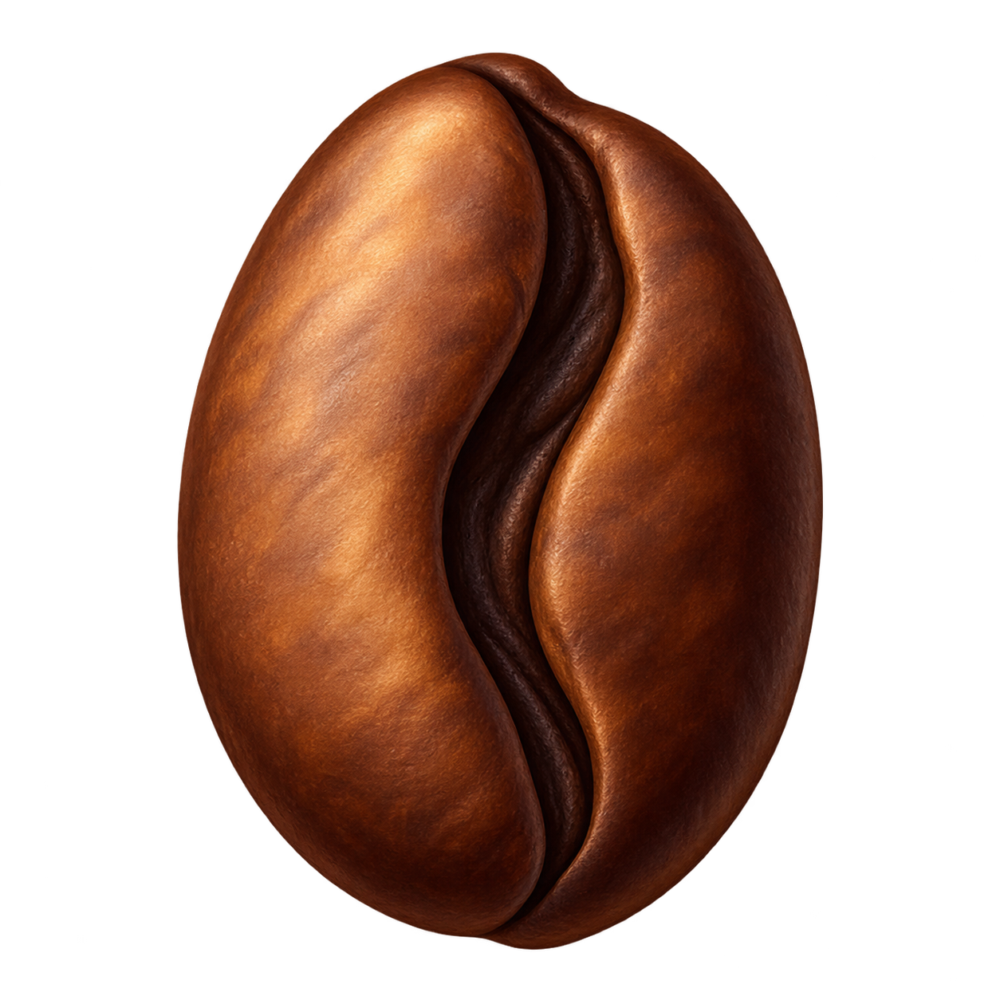

小猫加工厂
0
选颜色，拖动配色条调比例
0 种颜色
撤销
清空
选好颜色，开始做猫
试试三花 ↗
配方本 · 15 只猫 ↗
正在磨豆
查看猫卡
再做一只
暂停
重播
1×
声音关
00:00 / 00:08
选一只，调好它的颜色
配方本
×
比例接近就能做出来。点击「使用配方」会替你调好颜色，再点开始制作。
每一只，都是你调出来的
猫饼收藏夹
×
还没有猫饼。
调好第一杯颜色，就能带一只回家。
上一页
1 / 1
下一页
重试保存收藏
收藏保存在当前设备，喜欢的猫卡记得保存。
你的新朋友
×
保存猫卡
再做一只
